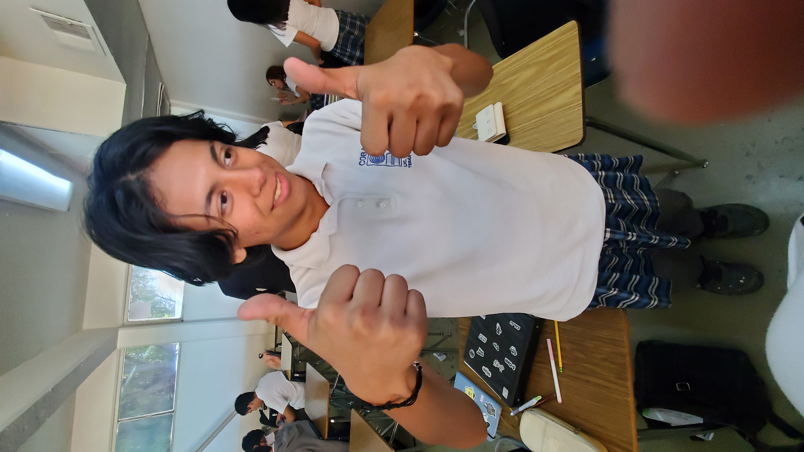

Hola, soy Alan Espinoza
Del grupo 602
Soy Alan, me gustan los videojuegos, fan #1 de Death Stranding 2, tengo una novia muy bonita y un gato tonto llamado trent Alexander-Kabo, me gusta la little ceasars y las k tiras de bbq, me gusta caminar y escuchar musica de vez en cuando.

Mis peliculas favoritas son:
- Rango
- El gato con botas: El Ultimo deseo
- sinners
- volver al futuro 1
- interestellar
Mis comidas faboritas
- Carnitas
- Tacos de carne asada
- Tacos de borrego
- Ke-tiras de bbq
- Spaguetti de mi mama
Volver al Index de parciales